Setting up and running your business on Laawol
Laawol connects customers who want to ship barrels and freight, buy vehicles, move cars, or park them, with the businesses that provide those services. You work from the business console in a web browser. Your customers use the Laawol mobile app or the customer website.
Have these ready before you begin:
Work through sections 3 to 7 in order. Each one depends on the one before it: you can't take orders until you're approved, and you can't be paid until your payout account is connected.
Go to business.laawoldigital.com and sign in with your business
email. You'll land on Today, your daily summary. Everything
else is reached from the sidebar on the left, grouped into
Business setup, Vehicle sales,
Transport & shipping, and Manage.
The FR button in the bottom-right corner switches the whole console to French. Anything you type stays as you typed it.
Open Business under Business setup. This is where you tell Laawol who you are and prove you're allowed to trade.
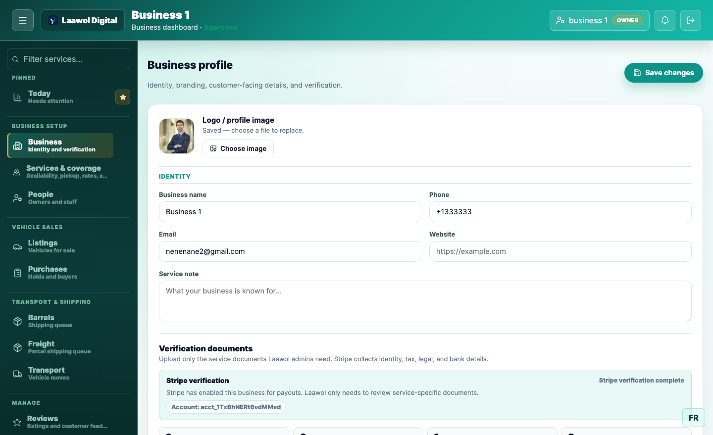
Fill in your legal name, address, and contact details, then upload the documents for the services you intend to offer. You only need the documents that apply to you:
| Document | Needed if you offer |
|---|---|
| Freight or shipping authority | Barrel shipping, shared barrels, freight |
| Dealer licence or sales authorisation | Car sales |
| Transport insurance and authority | Car transport |
| Parking facility proof | Car parking |
Each file can be up to 20 MB. Once uploaded, a document sits at submitted until a Laawol administrator reviews it and marks it verified. Your business status moves from pending to approved at that point, and the header shows Approved next to your name.
Until you're approved, customers can't find you. You can configure everything else in the meantime, but your services won't appear to customers and you can't receive orders.
Open Services & coverage. Turn on only the services you actually provide — each one you enable adds setup work and exposes you to orders you'd have to fulfil.
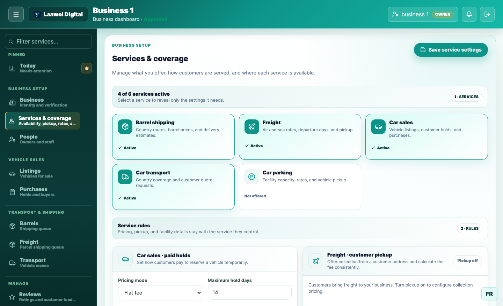
| Service | What it means for you |
|---|---|
| Barrel shipping | Customers send full barrels to a destination country you serve |
| Freight | Parcel shipping priced by weight, by air or by sea |
| Car sales | You list vehicles; customers reserve them with a paid hold |
| Car transport | You bid to move a customer's vehicle overseas |
| Car parking | You store vehicles at your facility for a daily or monthly rate |
Selecting a service reveals only the settings it needs, under Service rules — for example paid-hold pricing for car sales, or whether you collect freight from a customer's address. A service shows Not offered until you turn it on.
Still under Services & coverage, add each country you serve and set your prices per service. Coverage is per service, per country — you might ship barrels to Guinea and Senegal but only offer freight to Senegal.
For each destination you set:
A price of zero means "not offered". If you leave the sea freight rate at zero, customers won't be offered sea freight to that country — the service simply won't appear for them.
Laawol collects payment from the customer and passes your share to you. To receive money you must connect a payout account, which you'll be prompted to do from your dashboard. Until payouts are enabled, orders can still arrive but money can't reach you.
Three numbers govern every transaction:
| Term | What it is |
|---|---|
| Gross received | What the customer paid in total |
| Platform fee | Laawol's commission, set per business and shown on your dashboard |
| Business earnings | What reaches you after the platform fee |
There's also a setting for who absorbs the card processing fee — you or Laawol. If you absorb it, payments for your orders are charged directly on your connected account and the processing fee comes out of your share. Your dashboard states which applies under Who pays Stripe's processing fee.
Open People to invite staff. Each person gets their own sign-in and only sees the sections you allow.
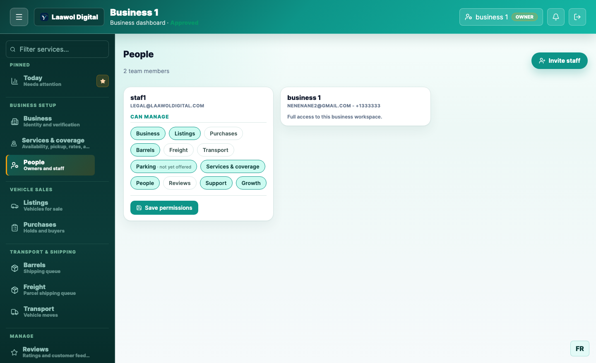
Permissions are per section: Business, Listings, Purchases, Barrels, Freight, Transport, Parking, Services & coverage, People, Reviews, Support, and Growth. Tick only what that person needs and press Save permissions. A service you don't offer shows as not yet offered and can't be granted.
The owner always has full access. Staff permissions apply to everyone else, so give warehouse staff the shipping queues without exposing pricing or payouts.
Today is where you start each morning. It answers one question: what needs attention right now.
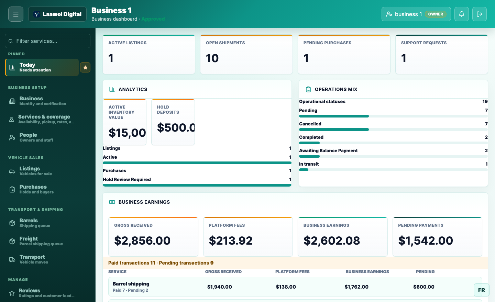
Listings holds the vehicles you're selling. Use New listing to add one — make, model, year, condition, mileage, price, and photos. Each listing carries a rebuilt title status, which customers see before they reserve.
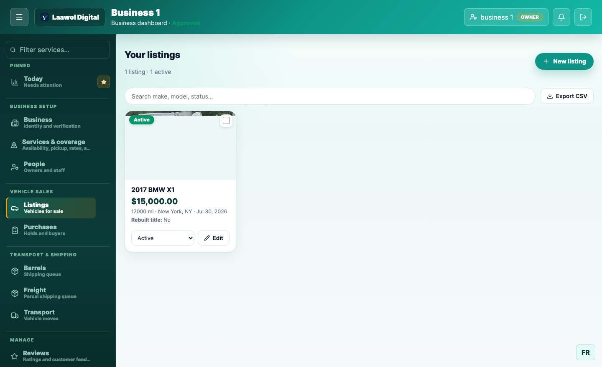
A listing's status moves draft → active → reserved → sold. Only active listings appear to customers. Use Export CSV to take your inventory into a spreadsheet.
Purchases shows customers who have paid a hold deposit to reserve a vehicle. Review each one and either confirm the sale or release the hold. Deposits appear under hold deposits on your dashboard until resolved.
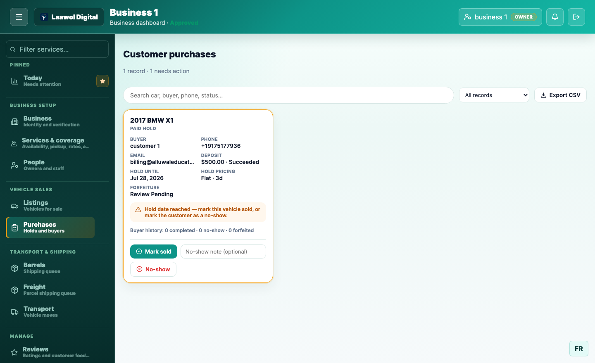
These are your shipping queues. Both work the same way: a customer books and pays, the order lands in your queue, and you move it through its statuses as the goods travel.
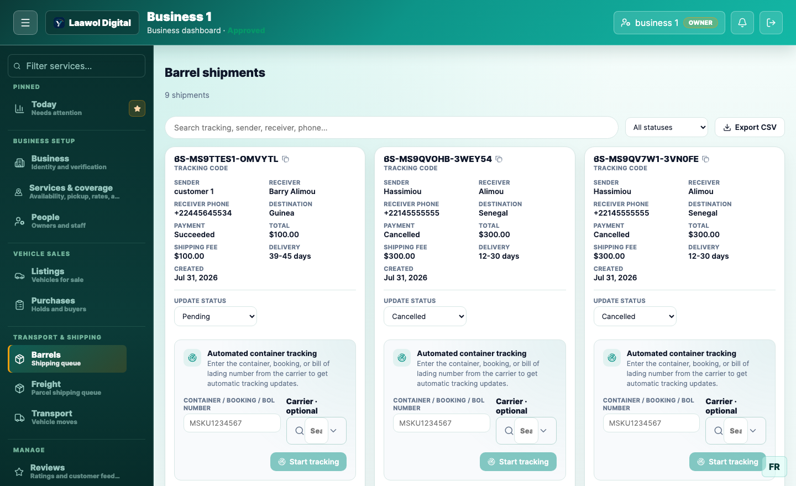
Every shipment shows its tracking code, sender and receiver, destination, what was paid, and the delivery estimate the customer was quoted. Change Update status as the shipment progresses. The customer sees that change in their app immediately.
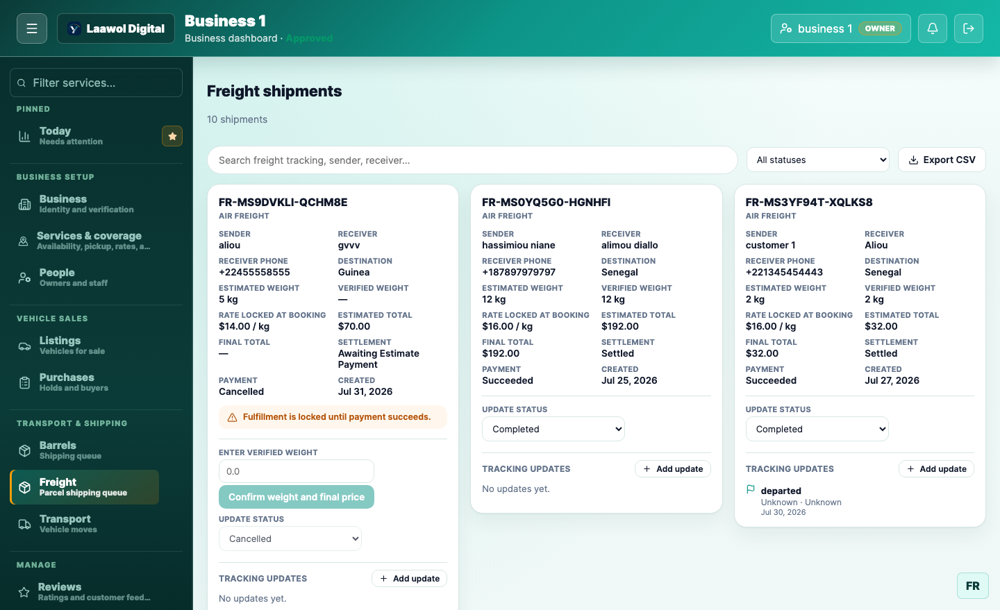
Freight is priced by weight. If the actual weight differs from what the customer declared, the difference is settled as a balance payment before the shipment can move on.
Car transport is a bidding marketplace, not first-come first-served. When a customer requests a vehicle move to a country you cover, the request appears in your Transport queue as an opportunity.
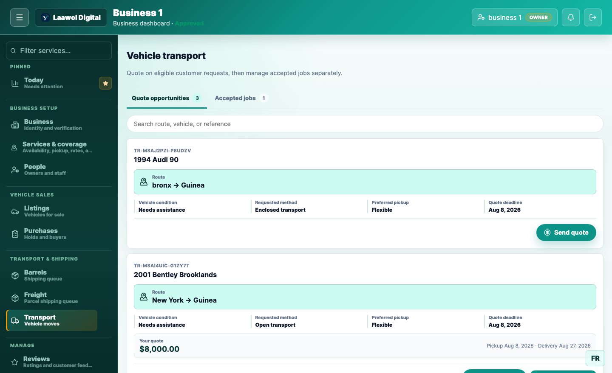
You can revise or withdraw a quote while the customer is still deciding. Each opportunity has a quote deadline — miss it and the opportunity closes.
"Scheduled" means booked, not moving. Use it once you've assigned a carrier and fixed a pickup date but the vehicle hasn't left. If that stage doesn't match how you work, go straight to in transit.
Anything travelling in a container — barrels, sea freight, and cars — needs a container number before you can mark it in transit.
On each shipment card, find Automated container tracking. Enter the container, booking, or bill of lading number from your carrier, pick the carrier from the list, and press Start tracking. From then on, carrier milestones flow into the shipment automatically and your customer can follow it.
The system will not let you mark a load "in transit" without it. This is deliberate: in transit is the moment your customer starts asking where their goods are, and the container number is the only thing that can answer them. Air freight is exempt, since it has no container.
Pick your carrier from the list rather than typing its code. A mistyped carrier code doesn't fail loudly — tracking simply never starts. If your carrier isn't listed, choose Another carrier and enter its four-letter SCAC code.
The bell in the top-right tells you when something needs you. You'll be notified when:
Clicking a notification takes you straight to the order it refers to, not just to the section. You can also receive these as push notifications on your phone and by email; adjust that under your notification preferences.
Customers rate you after a completed order. Your average rating and review count appear to customers when they're choosing a business, so this directly affects how much work you win. You can report a review you believe is abusive.
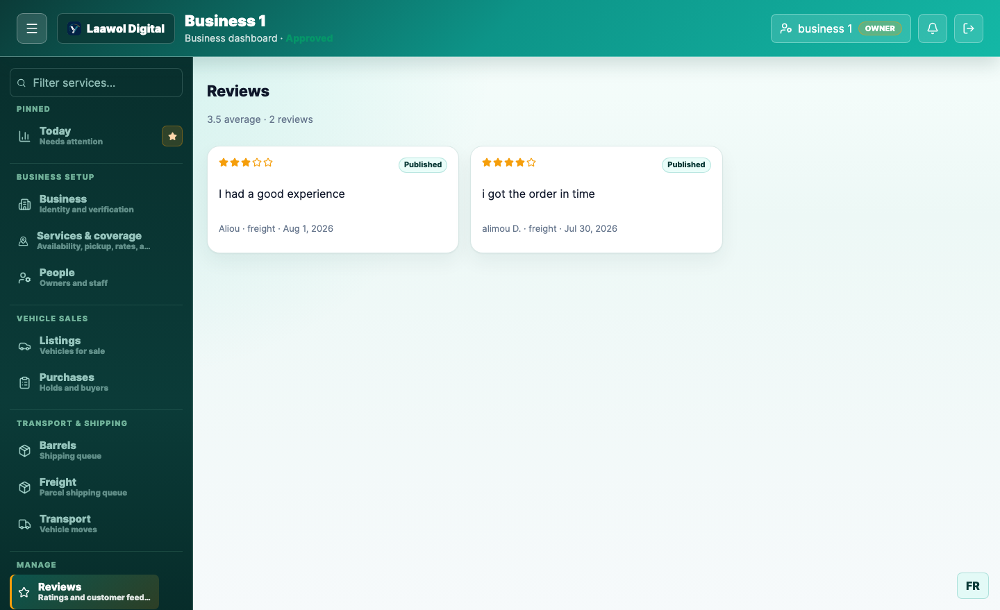
Support is your conversation with customers about specific orders. Each case is attached to the order it concerns, so you can see what they're referring to without asking.
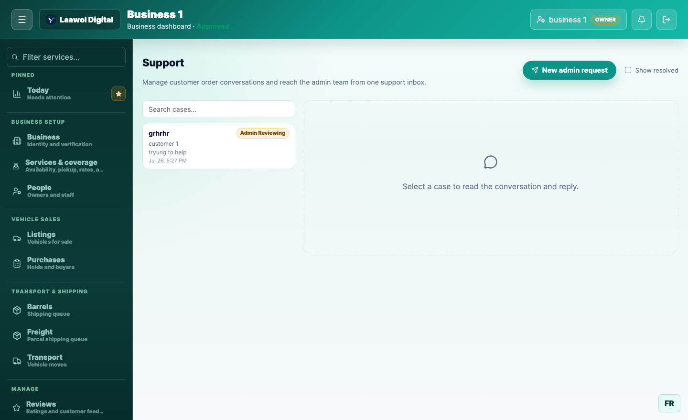
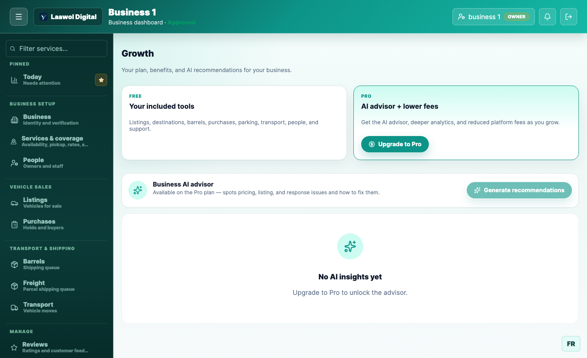
Your customers use the Laawol mobile app. Knowing what they see helps you understand what they're describing when they contact you.
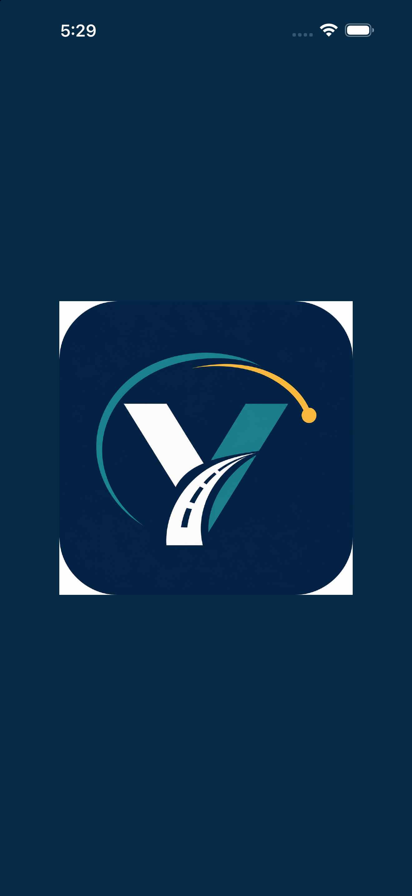
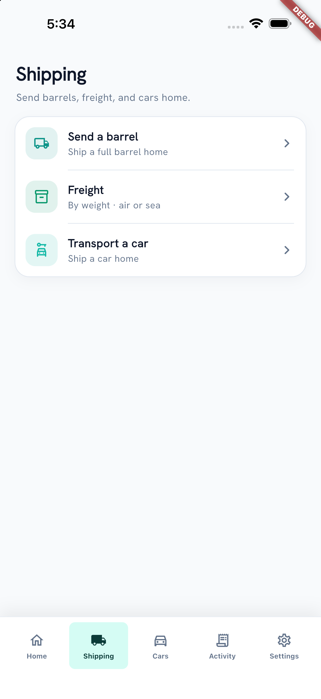
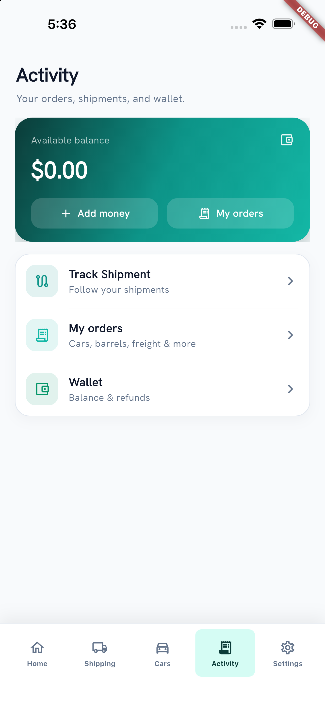
The status you set in your queue is the status they see here. When you move a shipment to in transit, their Activity list updates immediately — which is why keeping statuses current cuts down on "where is my order" messages.
| You want to… | Go to |
|---|---|
| See what needs attention | Today |
| Upload a licence or check approval | Business |
| Turn a service on or off | Services & coverage |
| Change a country price | Services & coverage → destinations |
| Add a staff member | People |
| Add a vehicle for sale | Listings → New listing |
| Approve a customer's hold | Purchases |
| Update a shipment's status | Barrels or Freight |
| Bid on a vehicle move | Transport → Send quote |
| Start container tracking | The shipment card in its queue |
| Answer a customer | Support |
Need help? Raise a case in Support from your console, and the Laawol team will pick it up.